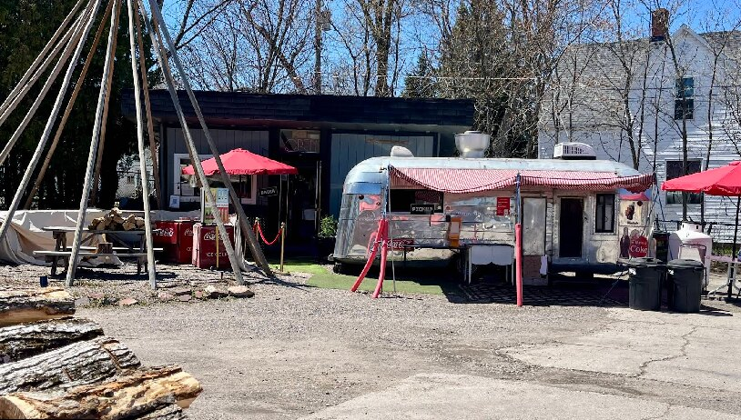

Indigenous Owned, Family Run
Motown Nate's is an Indigenous-owned business run by Nate and Andrea. Nate brought his Detroit roots north to the Soo, and the name and the Detroit-style coneys came with him. Everything is made to order, the meats are smoked in-house, and the fries are cut by hand every day.
The Camper
The kitchen is a vintage Airstream camper that was gutted and rebuilt into a working food truck. It's parked for good at 800 Ashmun St under the red and white awning, with the smoker beside it, and open through the warmer months each year.
The Teepee
Out front there's a teepee with a guitar-shaped campfire stove inside, so you can eat by the fire on a chilly evening or grab a picnic table under cover on a sunny day. Dogs are welcome.
